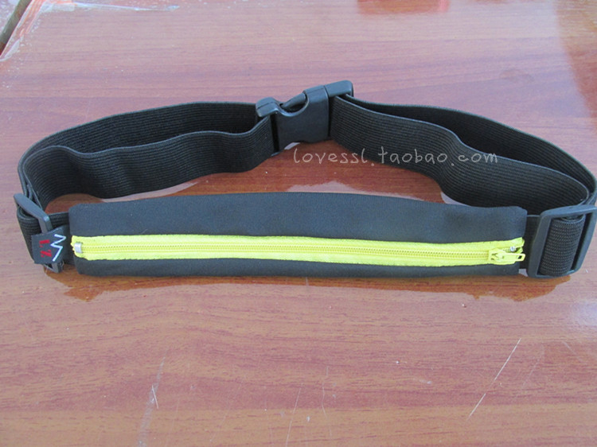

发信人: GTian (GTian), 信区: outdoor
标 题: 2013野外生存协会夏日激情百米定向比赛，火热报
发信站: 饮水思源 (2013年07月09日00:33:01 星期二)
screen.width - 200){this.width = screen.width - 200}">
充满激情的夏日，宅在寝室如何释放自己的荷尔蒙？
去户外呆久了太热？
不不不，
高手过招只在刀光剑影之间，
短短5分钟，让你感受读图，定位，反应，冲刺的极致体验！
2013野外生存协会夏日激情百米定向比赛
比赛简介：
本次比赛将在50*25的草坪上人工设置点标，参赛选手依照地图上点标的顺序在每个点用打
卡器进行手动打卡，并到达终点，其间为避免不按顺序打点，在途中某个检查点会安排工
作人员进行检查。
比赛特点：
1.较简单，地形无太大起伏。
2.现行进中的快速判断和快速移动能力，点与点之间直线距离很短，检查点要多，路线可
交叉。
3.定向尤其是对参加者在高速奔跑下的短时间内读图、作出正确判断是个挑战，是对参加
者智力、体力、心理素质的综合考察和锻炼。
比赛时间： 7月13日，16:00
比赛地点： 电院草坪
参赛人数： 60人
比赛形式： 个人赛
奖励机制： 男女一，二，三等奖各取1，2，3人
O报名费！奖品丰厚！户外精美包包等你赢！！！
一等奖
户外运动多功能腰包
screen.width - 200){this.width = screen.width - 200}">
screen.width - 200){this.width = screen.width - 200}">
二等奖
户外迷你运动腰包
screen.width - 200){this.width = screen.width - 200}">
 screen.width - 200){this.width = screen.width - 200}">
三等奖
蓝色领域户外旅行收纳包

screen.width - 200){this.width = screen.width - 200}">
报名请发送短信“姓名+性别+联系方式”至18817519385，名额有限先报先得，报名人数满
60人即截止报名！
比赛还需要6名工作人员，迷宫由你们创造！报名请在姓名前注明“工作人员报名”。
充满激情少年们，还等什么？立即拿出手机吧~
--
※ 来源:·饮水思源 bbs.sjtu.edu.cn·[FROM: 59.78.57.188]
|